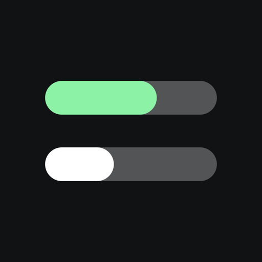
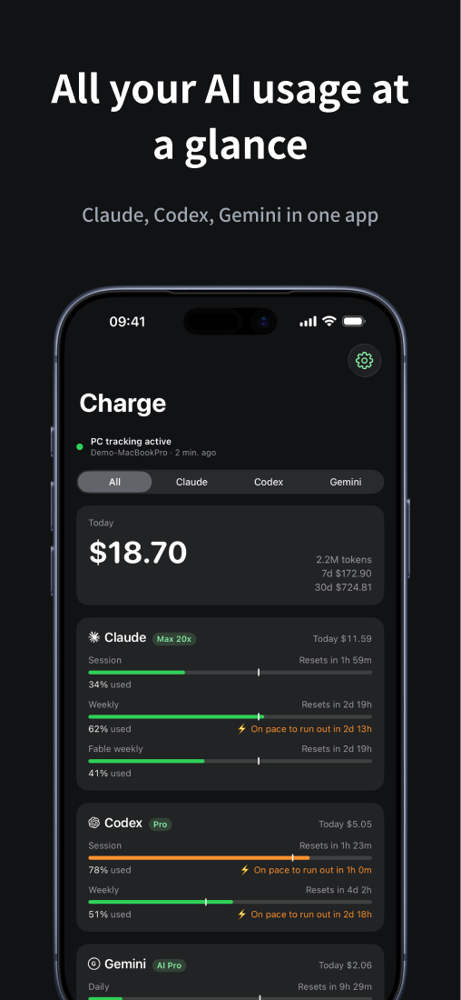
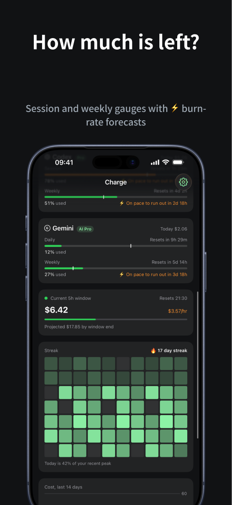
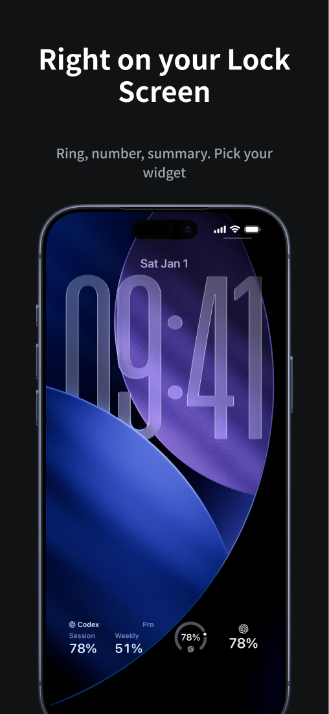
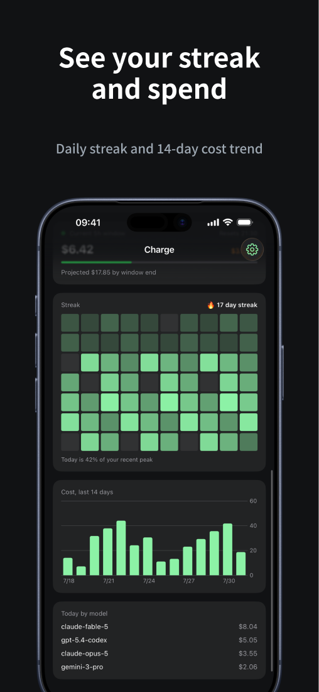

Now on the App Store
AI 코딩 툴 사용량을
iPhone에서
Claude Code, Codex의 세션과 주간 한도, 오늘 쓴 비용을 앱과 위젯으로. 데스크톱 수집기가 5분마다 사용량 통계만 올리고, 코드나 대화 내용은 절대 전송하지 않습니다.
App Store에서 받기
iPhone 앱, 수집기는 macOS와 Windows (Node.js 18+)




시작하기
- iPhone에 Charge를 설치하고 Apple로 로그인합니다.
- 앱이 보여주는 명령을 컴퓨터 터미널에 붙여넣습니다
npx charge-connect <페어링코드>
- 끝. 5분 간격 자동 수집까지 한 번에 등록됩니다.
자주 묻는 질문
- 데이터가 안 보여요컴퓨터에서 페어링 명령을 실행했는지, Node.js 18 이상이 설치되어 있는지 확인해 주세요. 수집기는 5분마다 업로드하므로 첫 데이터까지 잠시 걸릴 수 있습니다.
- 컴퓨터 연결을 해제하고 싶어요앱 설정의 연결된 컴퓨터 목록에서 밀어서 해제하면 해당 기기의 데이터가 즉시 삭제됩니다.
- 계정을 삭제하고 싶어요앱 설정에서 계정 삭제 시 모든 데이터가 서버에서 영구 삭제됩니다.